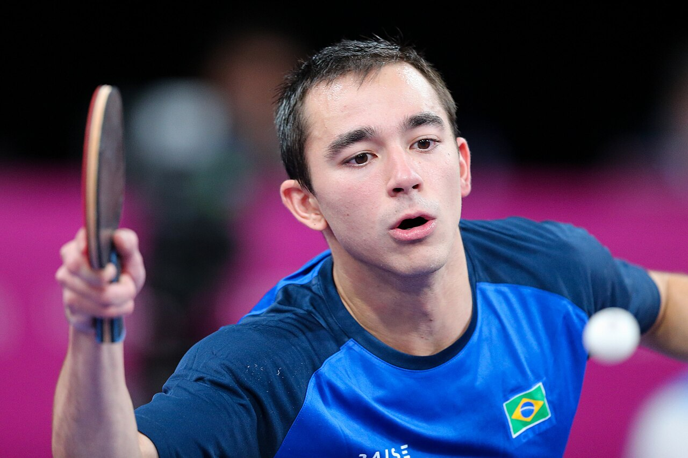

Hugo Calderano escreveu mais um capítulo importante de sua trajetória no tênis de mesa mundial ao alcançar as semifinais do China Smash 2026. O brasileiro garantiu a classificação neste sábado, 10 de outubro, depois de derrotar o francês Félix Lebrun, número 2 do ranking mundial, por 4 sets a 1, em uma partida marcada pelo equilíbrio e pela capacidade de reação nos momentos decisivos.
A vitória representou mais do que uma classificação. Calderano superou um adversário que havia levado a melhor nos três confrontos anteriores entre eles, incluindo a disputa pela medalha de bronze dos Jogos Olímpicos de Paris 2024, e alcançou sua melhor campanha no individual masculino do China Smash.
Aos 30 anos e ocupando a sétima colocação do ranking mundial durante a competição, o brasileiro chegou à semifinal com quatro vitórias consecutivas. Nas três primeiras partidas, não perdeu um único set. Diante de Lebrun, enfrentou seu desafio mais exigente e respondeu com quatro parciais vencidas consecutivamente.
A campanha de Hugo Calderano no China Smash 2026
A trajetória de Calderano começou diante do alemão Dimitrij Ovtcharov. O brasileiro venceu por 3 sets a 0, com parciais de 11/9, 11/9 e 11/8, demonstrando regularidade diante de um adversário experiente do circuito internacional.
O confronto tinha um componente adicional: Ovtcharov havia derrotado Hugo no WTT Champions de Doha, em janeiro de 2026. A vitória em Pequim permitiu ao brasileiro inverter o resultado daquele encontro e começar sua participação no China Smash sem perder sets.
Na segunda rodada, Calderano enfrentou o sul-coreano An Jaehyun e repetiu o placar de 3 a 0. As parciais de 11/5, 11/9 e 12/10 evidenciaram um início dominante e um terceiro set mais equilibrado, decidido na diferença mínima.
O desempenho mais contundente aconteceu nas oitavas de final, em 8 de outubro. Contra Patrick Franziska, da Alemanha, Calderano venceu por 3 sets a 0, com parciais de 11/2, 11/5 e 11/7. O brasileiro abriu grandes vantagens nas duas primeiras parciais e controlou a reação do alemão na terceira.
Com três triunfos sem ceder sets, Calderano avançou às quartas de final para enfrentar Félix Lebrun, um dos principais nomes da nova geração do tênis de mesa europeu.
A vitória que marcou a campanha
O confronto das quartas de final reuniu dois jogadores com um histórico importante de enfrentamentos no circuito mundial. Lebrun chegou à partida como vice-líder do ranking e cabeça de chave número 1 do torneio, enquanto Calderano buscava interromper uma sequência de derrotas diante do francês.
O primeiro set terminou com vitória de Lebrun por 11/9. O francês conseguiu quatro pontos consecutivos depois de estar em desvantagem por 9 a 7 e abriu o placar.
Na segunda parcial, Calderano reagiu. O brasileiro chegou a abrir 10 a 6, viu Lebrun se aproximar, mas conseguiu fechar em 11/9 e empatar a partida.
O terceiro set apresentou outro momento de tensão. Hugo chegou a 10 a 5, porém o adversário salvou cinco oportunidades de fechar. Mesmo assim, o brasileiro manteve a concentração e venceu por 12/10.
Na quarta parcial, Lebrun chegou a ter a vantagem de 10 a 9, mas Calderano conquistou três pontos consecutivos e virou para 12/10, abrindo 3 sets a 1.
O quinto set foi novamente equilibrado. Os jogadores chegaram empatados a 9 a 9, quando Hugo marcou os dois pontos finais e confirmou a vitória por 11/9.
O detalhe mais marcante do confronto foi a margem de pontuação: todos os cinco sets terminaram com apenas dois pontos de diferença.
A rivalidade entre Calderano e Félix Lebrun
O confronto de Pequim também teve um peso especial pelo histórico recente entre os atletas.
Nos Jogos Olímpicos de Paris 2024, Lebrun venceu Calderano na disputa pela medalha de bronze do individual masculino, deixando o brasileiro na quarta colocação.
A rivalidade continuou no circuito internacional. Em 2025, Calderano conquistou uma vitória importante sobre o francês na final do WTT Star Contender Ljubljana, por 4 sets a 2.
Em 2026, porém, Lebrun voltou a levar vantagem. O francês derrotou Hugo no WTT Champions Chongqing, por 4 a 3, e posteriormente nas quartas de final do Europe Smash, na Suécia, por 4 a 1.
A vitória no China Smash interrompeu essa sequência negativa e representou um dos resultados mais significativos da temporada do brasileiro, tanto pela posição do adversário no ranking quanto pela importância competitiva do torneio.
Semifinal: mais um desafio de alto nível
A classificação colocou Hugo Calderano diante de Lin Yun-ju, representante de Taipé Chinesa e número 6 do ranking mundial durante o torneio.
Lin garantiu sua vaga depois de derrotar o sueco Truls Möregårdh por 4 sets a 0.
O histórico de confrontos também indicava um desafio importante para Calderano. Antes da semifinal, os dois haviam se enfrentado cinco vezes, com quatro vitórias de Lin e apenas uma do brasileiro.
A semifinal foi programada para 11 de outubro de 2026, às 1h da madrugada pelo horário de Brasília. A decisão do individual masculino estava prevista para o mesmo dia, às 7h e terá transmissão ao vivo pelo sportv 2. A emissora também transmitirá a grande final do China Smash.
A campanha até essa fase já assegurava ao brasileiro uma posição entre os quatro melhores do China Smash, superando seus resultados anteriores na competição.
A importância do torneio
O China Smash faz parte da categoria Grand Smash da World Table Tennis (WTT), considerada uma das mais importantes do circuito profissional de tênis de mesa.
A categoria costuma ser comparada aos torneios de Grand Slam do tênis por reunir atletas de alto nível e oferecer grande pontuação para o ranking mundial.
A edição de 2026 aconteceu em Pequim, com disputas masculinas e femininas nas categorias individuais e de duplas. A chave principal de simples reuniu 64 competidores em cada gênero.
Para os atletas, avançar em um Grand Smash significa enfrentar uma sequência de adversários de elite, frequentemente com confrontos contra jogadores posicionados entre os melhores do ranking internacional.
Calderano já conhecia o peso dessa competição. Na edição de 2025, havia alcançado as quartas de final do individual masculino, mas acabou eliminado pelo chinês Xiang Peng.
Ao superar Félix Lebrun em 2026, o brasileiro ultrapassou aquela marca e garantiu sua primeira participação nas semifinais do individual masculino do China Smash.
Disputa nas duplas mistas
Além do torneio individual, Calderano também participou do China Smash ao lado de Bruna Takahashi nas duplas mistas.
A parceria brasileira havia conquistado um dos resultados mais importantes de sua história meses antes, com o título do Singapore Smash 2026 nas duplas mistas.
Na China, entretanto, a campanha terminou nas oitavas de final.
Os brasileiros enfrentaram Eduard Ionescu e Bernadette Szocs, da Romênia, em um confronto decidido no quinto set. Depois de alternâncias no placar, a dupla romena venceu por 3 sets a 2, com parciais de 11/9, 8/11, 11/9, 3/11 e 11/8, na perspectiva dos vencedores.
Apesar da eliminação nas duplas, Calderano conseguiu manter o alto rendimento na disputa individual e avançou até a semifinal.
O peso da campanha de 2026
A participação em Pequim também se conecta a um período de conquistas importantes do brasileiro.
Em abril de 2025, Calderano entrou para a história ao conquistar a Copa do Mundo de tênis de mesa em Macau. Na decisão, derrotou o chinês Lin Shidong, então número 1 do mundo, por 4 sets a 1.
O resultado fez dele o primeiro brasileiro e o primeiro atleta das Américas a conquistar o título mundial da competição masculina.
Pouco depois, em maio de 2025, Calderano alcançou outra marca importante ao chegar à final do Campeonato Mundial individual, em Doha, terminando com o vice-campeonato após derrota para o chinês Wang Chuqin.
Esses resultados fortaleceram sua posição entre os principais nomes da modalidade e demonstraram a capacidade de enfrentar adversários que historicamente dominaram as grandes competições internacionais.
A temporada de 2026 acrescentou outros capítulos a essa trajetória. Além do título nas duplas mistas em Singapura, Calderano chegou à final do WTT Champions Macau, em setembro, encerrando a competição com o vice-campeonato diante do sueco Truls Möregårdh.
O China Smash acrescentou uma nova campanha de destaque, desta vez marcada especialmente pela vitória sobre Félix Lebrun e pela classificação inédita à semifinal do individual masculino em Pequim.
Independentemente do resultado posterior da disputa pelo título, a campanha de Hugo Calderano até as semifinais do China Smash 2026 ficou marcada por quatro vitórias consecutivas, uma virada sobre o número 2 do mundo e a superação de sua melhor participação anterior no torneio.
Mais do que um resultado isolado, a trajetória na China tornou-se outro capítulo da consolidação de Calderano entre os protagonistas do tênis de mesa internacional.